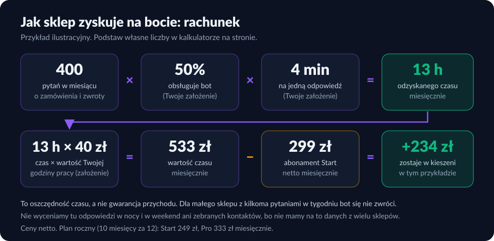

Bot dla sklepu internetowego: status zamówienia i zwroty bez Twojej ręki
„Gdzie jest moja paczka?” i „Chcę zwrócić zamówienie” to pytania, które wracają codziennie, także w nocy. Bot KREATO sprawdza status w systemie sklepu, przyjmuje zgłoszenie zwrotu lub anulowania i daje Ci znać na Telegramie. Decyzje zostają po Twojej stronie.
Co robi bot
- Status zamówienia: po numerze zamówienia i e-mailu lub telefonie podaje stan (opłacone, w kompletowaniu, wysłane, dostarczone), pozycje, przewoźnika i numer przesyłki.
- Zwrot w terminie: sprawdza, czy zamówienie mieści się w ustawowych 14 dniach na odstąpienie od umowy, i przyjmuje zgłoszenie. Po terminie wskazuje drogę reklamacji.
- Anulowanie przed wysyłką: przyjmuje prośbę, a sklep ją potwierdza.
- Pytania ze sklepu: dostawa, płatności, reklamacje i kontakt — wyłącznie z bazy wiedzy, którą dla Ciebie spisujemy. Czego nie wie, tego nie zgaduje.
Schemat działania

Ten sam schemat w wersji klikanej: Jak działają boty KREATO (zakładka „Bot dla sklepu”).
Przykładowa rozmowa (sklep demonstracyjny)
Bot: Chętnie sprawdzę status. Podaj proszę numer zamówienia oraz adres e-mail lub telefon użyty przy zakupie.
Klient: Numer DEMO-1001, mail jan.test@example.com
Bot: Zamówienie DEMO-1001 zostało wysłane. Produkty: Lampka nocna LED x1, Zarowka E27 x2. Wartość: 129,90 zł. Przewoźnik: InPost, numer przesyłki: 600000000000000000000001.
To rozmowa z naszego sklepu demonstracyjnego z danymi testowymi, a nie z prawdziwym klientem. Bot nie wymyśla statusów: odpowiedź o zamówieniu pochodzi z systemu sklepu, a nie z modelu językowego.
Jak to jest zabezpieczone
- Zamówienie wydajemy tylko po zgodności numeru z e-mailem lub telefonem. Błędny numer i błędny kontakt dają tę samą odpowiedź, więc nie da się zgadywać cudzych zamówień.
- Bot nie obiecuje zwrotu pieniędzy ani wymiany. Przyjmuje zgłoszenie, a sklep decyduje.
- Nigdy nie prosi o dane karty, hasła ani PESEL i jasno mówi, że jest asystentem AI.
- Klucz API sklepu (tylko do odczytu) trzymamy w zaszyfrowanym magazynie sekretów, a zgłoszenia zwrotów zapisujemy z zamaskowanym kontaktem.
Platformy
| Platforma | Status |
|---|---|
| WooCommerce | Integracja przez klucz API tylko do odczytu. Wdrożenie pilotażowe z pierwszymi sklepami. |
| Shoptet, Shopify | W przygotowaniu. Do tego czasu bot odpowiada z bazy wiedzy i przekazuje sprawy zamówień do zespołu. |
| Inne sklepy | Zakres integracji sprawdzamy przed wdrożeniem. |
Jak sklep zarabia na bocie
Bot nie sprzedaje za Ciebie, więc nie obiecujemy wzrostu przychodu. Zyskujesz w trzech miejscach:
- Czas obsługi. „Gdzie jest paczka?” i część zgłoszeń zwrotu bot załatwia bez Ciebie. Odzyskany czas ma swoją wartość i to ją liczymy poniżej.
- Odpowiedź o każdej porze. Pytanie wieczorem nie czeka do rana. Tego nie wyceniamy w rachunku, bo nie mamy danych z wielu sklepów.
- Kontakty. Gdy ktoś jest zainteresowany ofertą, bot zbiera dane i przekazuje je Tobie.

Cennik (ceny netto za miesiąc)
| Start | Pro | |
|---|---|---|
| Cena miesięczna | 299 zł | 399 zł |
| Plan roczny (płacisz za 10 miesięcy, korzystasz 12) | 249 zł | 333 zł |
| Czat na stronie z bazą wiedzy sklepu (dostawa, płatności, reklamacje) | ✓ | ✓ |
| Status zamówienia po numerze i e-mailu lub telefonie | ✓ | ✓ |
| Przyjmowanie zwrotów i anulowania, powiadomienie w Telegramie | — | ✓ |
Cena netto. Domyślnie wystawiamy rachunek bez VAT; na życzenie faktura z VAT przez platformę Useme.
Jak wygląda wdrożenie
- Przysyłasz zasady dostawy, zwrotów, płatności i kontakt (spiszemy je z Tobą — co przygotować).
- Dla WooCommerce tworzysz klucz API tylko do odczytu (instrukcję dostajesz od nas).
- W 2–3 dni przygotowujemy pilotaż. Testujemy go na przykładowych zamówieniach, zanim wstawimy widget na stronę.
- Po miesiącu patrzymy na rozmowy i poprawiamy odpowiedzi (jak ocenić bota).
Najczęstsze pytania
Czy bot sam zwraca pieniądze lub decyduje o zwrocie?
Nie. Bot przyjmuje zgłoszenie zwrotu lub anulowania i przekazuje je do sklepu (powiadomienie w Telegramie). O zwrocie pieniędzy, wymianie i terminach decyduje obsługa sklepu.
Jak bot sprawdza zamówienie bez logowania?
Klient podaje numer zamówienia oraz adres e-mail lub telefon użyte przy zakupie. Jeśli dane nie pasują do zamówienia, bot odpowiada tak samo jak przy nieistniejącym numerze, więc nie da się w ten sposób przeglądać cudzych zamówień.
Z jakimi platformami działa bot?
WooCommerce: integracja przez klucz API tylko do odczytu, wdrażana pilotażowo z pierwszymi sklepami. Shoptet i Shopify: w przygotowaniu — do tego czasu bot odpowiada na pytania z bazy wiedzy sklepu i przekazuje sprawy zamówień do zespołu.
Ile kosztuje bot dla sklepu?
Start 299 zł netto miesięcznie, Pro 399 zł netto miesięcznie. W planie rocznym płacisz za 10 miesięcy i korzystasz 12: Start 249 zł, Pro 333 zł miesięcznie. Ceny są netto; domyślnie wystawiamy rachunek bez VAT, a na życzenie fakturę z VAT przez platformę Useme.
Czy bot się zwraca?
To zależy od liczby pytań. Przykład ilustracyjny na założeniach, a nie wyniki klientów: 400 pytań miesięcznie, połowa obsłużona przez bota, 4 minuty na odpowiedź i godzina pracy za 40 zł dają około 13 godzin odzyskanego czasu miesięcznie. Dla sklepu z kilkoma pytaniami w tygodniu bot się nie zwróci. Podstaw własne liczby w kalkulatorze na tej stronie.
Co z danymi klientów sklepu?
Bot odczytuje z zamówienia tylko to, co potrzebne do odpowiedzi (status, pozycje, przewoźnik, numer przesyłki). Klucz dostępu do sklepu jest przechowywany w zaszyfrowanym magazynie sekretów, a zgłoszenia zwrotów zapisujemy z zamaskowanym kontaktem. Szczegóły: polityka prywatności.
Czy mogę najpierw zobaczyć, jak to działa?
Tak. Napisz na biuro@kreato.tech — pokażemy bota na przykładowym sklepie demonstracyjnym, a po otrzymaniu zasad dostawy i zwrotów przygotujemy pilotaż w 2–3 dni.
Zobacz też: Jak bot odpowiada na „gdzie jest paczka” i zwroty (artykuł) · Chatbot dla sklepu — kiedy warto · Chatbot AI dla e-commerce · Jak działają nasze boty
Chcesz zobaczyć bota na swoim sklepie?
Napisz do nas — odpiszemy e-mailem i pokażemy demonstrację.
biuro@kreato.tech